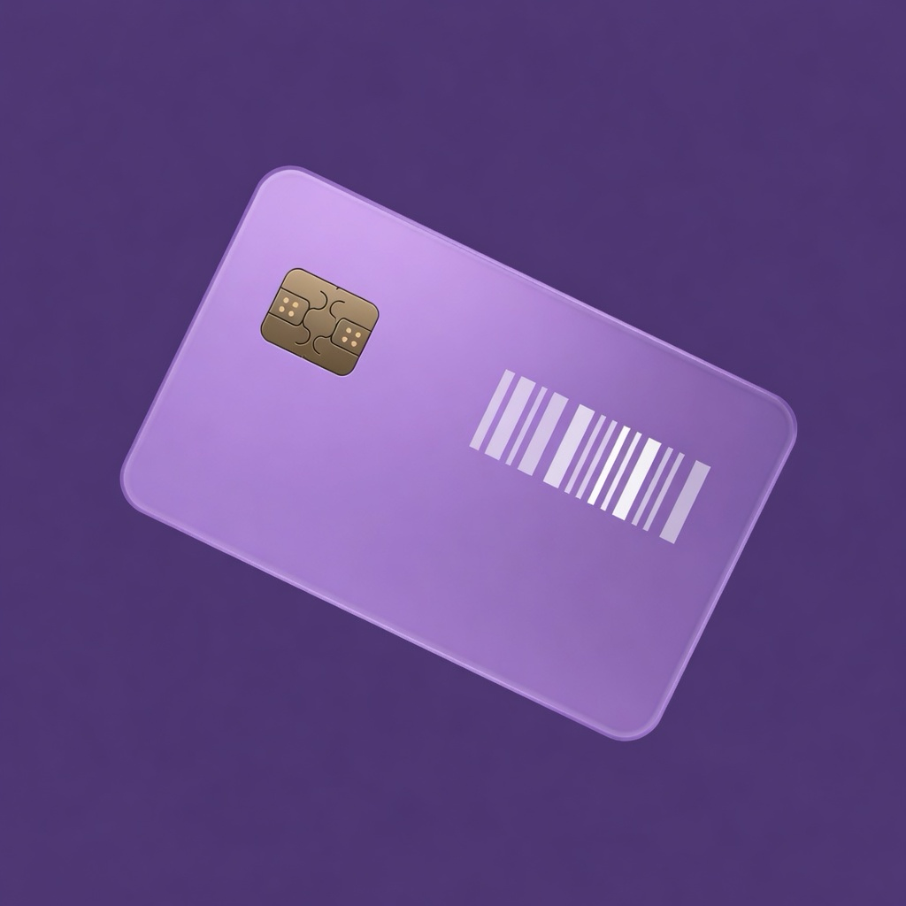

Support
Questions, a store that isn't recognised, or a card that won't scan at checkout? Write to us — we read every message.
anton@wearesuperb.com
Please mention your iPhone model and iOS version. A screenshot helps a lot.
Frequently asked questions
How do I add a card?
Open Add and choose one of the options:
- Photograph the card — for a physical plastic card.
- Screenshot from gallery — for a card shown in a store's own app.
- Point the camera at a code — live barcode or QR scan.
- Choose a store — pick it from the list and type the number by hand.
Check the store name and code, then tap Save card.
The cashier's scanner can't read the code
Open the card — Bonusik brightens the screen automatically. Hold the phone flat, a little further from the scanner, and remove any screen protector glare. If the code still won't scan, the card number is shown under the barcode so the cashier can type it in.
If the barcode type looks wrong, delete the card and add it again by scanning the original code with the camera.
Do I need an account?
No. Bonusik has no accounts and no sign-in. Your cards are stored on your iPhone.
Will I lose my cards if I delete the app?
No, as long as iCloud Keychain is turned on. Bonusik keeps a copy of your cards in your iCloud Keychain. When you install the app again with the same Apple ID, the cards come back automatically.
To check: Settings → [your name] → iCloud → Passwords and Keychain.
How do I move cards to a new iPhone?
Sign in with the same Apple ID and make sure iCloud Keychain is on. Install Bonusik on the new iPhone and your cards will appear. You can also share individual cards (see below).
How do I share a card with family or friends?
Open a card and tap Share. Your friend opens More → Receive a card from a friend in Bonusik and scans the QR code. Or tap Send as a file and send it in any messenger — opening the file adds the card.
My store isn't in the list
Choose Other, enter the store name and pick a colour for the card. Let us know which store you'd like to see — we add popular ones in updates.
How do I change the language?
Open More → Language. Bonusik is available in English, Ukrainian and Slovak.
How do I delete a card?
On the Cards screen, long-press a card and choose Delete — or open the card and tap the trash icon. Deleted cards are removed permanently.